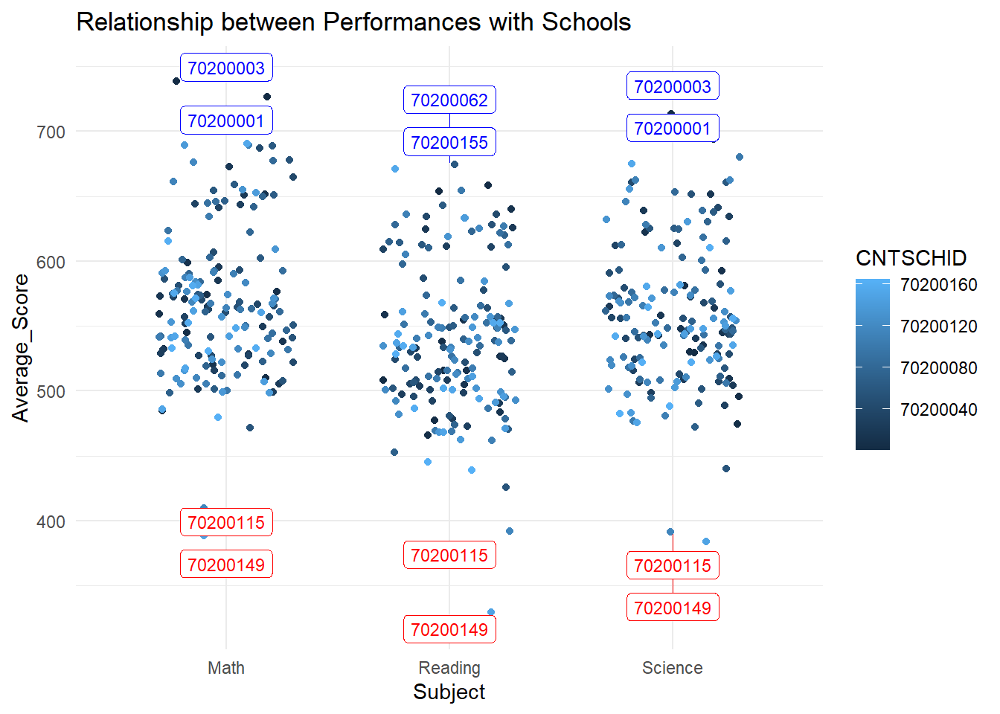

Code
pacman::p_load(tidyverse, haven, knitr, kableExtra, intsvy, ggrepel, patchwork,
ggthemes, hrbrthemes, ggdist, ggridges, colorspace, gridExtra)January 25, 2024
January 25, 2024
In this Take-home Exercise 2, I have chosen one of my classmate’s Take-home Exercise 1 submission and analyzed the visualization in terms of clarity and aesthetics.
As we are focursed on Singapore database. So firstly we should filter Singapore dataset. Refer to In-class Exercise 1 for more details.
For the original version, three histograms are used to display the distribution of students’ math, reading, and science score.
Distinct Colours: The use of different colors (aquamarine, cornsilk, and darkolivegreen2) for each histogram makes it easy to differentiate between the three subjects.
Clear Titles: Each plot has a clear title that specifies the subject of the scores being displayed, which helps in understanding what each histogram represents.
Lack of Mean Indication: The mean of each distribution is not clearly indicated within the plot area, making it less straightforward for viewers to understand the key point of the data representation.
Overlapping Axes Labels: The x-axis labels (meanmathscore, meanreadscore, meansciescore) are overlapping with the lower plot, which can make it hard to read.
Consistent Axis Scales: While the histograms are likely meant to be compared, the y-axis scales differ between the three, which may mislead a viewer regarding the relative frequencies of score ranges.
Border and Fill Contrast: The black borders around the bars with different fill colors provide a good contrast, making individual bars stand out.
Spacing Between Plots: The plots are tightly stacked, which may lead to a cluttered look, especially when viewed on smaller screens or from a distance.
After performing necessary modifications, the final code and design are as follows:
meanmathscore = rowMeans(select(stu_qqq_SG, PV1MATH : PV10MATH))
stu_qqq_SG$meanmathscore <- meanmathscore
h1 <- ggplot(data = stu_qqq_SG, aes(x = meanmathscore)) +
geom_histogram(bins=20, boundary = 100, color="black", fill="aquamarine") +
geom_vline(aes(xintercept = mean(meanmathscore)), color = "red", linetype = "dashed") +
annotate("text", x = mean(stu_qqq_SG$meanmathscore), y = Inf, label = paste("Mean:", round(mean(stu_qqq_SG$meanmathscore), 2)),
vjust = 1, color = "red") +
coord_cartesian(xlim=c(150,850), ylim = c(0,1000)) +
labs(y = "Count", x="Average Maths Score", subtitle = "Maths") +
theme_economist()+
scale_x_continuous(breaks = seq(0, 850, by = 200)) # Adjust the breaks to include 20 if necessary
meanreadscore = rowMeans(select(stu_qqq_SG, PV1READ : PV10READ))
stu_qqq_SG$meanreadscore = meanreadscore
h2 <- ggplot(data = stu_qqq_SG,
aes(x = meanreadscore)) +
geom_histogram(bins=20,
boundary = 100,
color="black",
fill="cornsilk") +
geom_vline(aes(xintercept = mean(meanreadscore)), color = "red", linetype = "dashed") +
annotate("text", x = mean(stu_qqq_SG$meanreadscore), y = Inf,
label = paste("Mean:", round(mean(stu_qqq_SG$meanreadscore), 2)),
vjust = 1, color = "red") +
coord_cartesian(xlim=c(150,850)) +
theme_economist()+
labs(y = "Count", x="Average Read Score", subtitle = "Read")+
coord_cartesian(ylim = c(0,1000))
meansciescore = rowMeans(select(stu_qqq_SG, PV1SCIE : PV10SCIE))
stu_qqq_SG$meansciescore = meansciescore
h3 <- ggplot(data = stu_qqq_SG,
aes(x = meansciescore)) +
geom_histogram(bins=20,
boundary = 100,
color="black",
fill="darkolivegreen2") +
geom_vline(aes(xintercept = mean(meansciescore)), color = "red", linetype = "dashed") +
annotate("text", x = mean(stu_qqq_SG$meansciescore), y = Inf,
label = paste("Mean:", round(mean(stu_qqq_SG$meansciescore), 2)),
vjust = 1, color = "red") +
coord_cartesian(xlim=c(150,850)) +
theme_economist()+
labs(y = "Count", x="Average Science Score", subtitle = "Science")+
coord_cartesian(ylim = c(0,1000))
h1 + h2 + h3 +
plot_annotation(title = "Distributions of Average of Maths/Read/Science")arrange the histograms horizontally in a single row: By arranging the histograms side by side, viewers can easily compare the distributions of scores in Maths, Reading, and Science.
Distinct Colours: The use of different colors (aquamarine, cornsilk, and darkolivegreen2) for each histogram makes it easy to differentiate between the three subjects.
Overplotting: There is a high degree of overplotting which affects the clarity of the data. The dense overlapping of lines creates visual clutter, making it hard to distinguish between different groups or to identify trends within individual groups.
Alignment and Layout: Aligning the plots in a horizontal array allows for an easy comparison across the different subjects. This layout is effective for side-by-side analysis without needing to scroll or switch between different visualizations.
After performing necessary modifications, the final code and design are as follows:
stu_qqq_SG <- stu_qqq_SG %>%
mutate(
Math = rowMeans(select(., starts_with("PV1MATH"), ends_with("PV10MATH")), na.rm = TRUE),
Reading = rowMeans(select(., starts_with("PV1READ"), ends_with("PV10READ")), na.rm = TRUE),
Science = rowMeans(select(., starts_with("PV1SCIE"), ends_with("PV10SCIE")), na.rm = TRUE)
)
new_data <- select(stu_qqq_SG,CNTSTUID,CNTSCHID,ST004D01T, ESCS, Math, Reading, Science)
# Calculate the average scores for each school and subject
school_averages <- stu_qqq_SG %>%
group_by(CNTSCHID) %>%
summarize(
Math = mean(Math, na.rm = TRUE),
Reading = mean(Reading, na.rm = TRUE),
Science = mean(Science, na.rm = TRUE),
.groups = 'drop'
)
# Reshape the data to a long format for plotting
school_averages_long <- school_averages %>%
pivot_longer(
cols = c(Math, Reading, Science),
names_to = "Subject",
values_to = "Average_Score"
)
# Select the top 2 and bottom 2 schools for each subject
top_schools <- school_averages_long %>%
group_by(Subject) %>%
slice_max(order_by = Average_Score, n = 2) %>%
ungroup()
bottom_schools <- school_averages_long %>%
group_by(Subject) %>%
slice_min(order_by = Average_Score, n = 2) %>%
ungroup()
# Create the scatter plot
p <- ggplot(school_averages_long, aes(x = Subject, y = Average_Score)) +
geom_point(aes(color = CNTSCHID), position = position_jitterdodge(jitter.width = 0.6)) +
labs(title = "Relationship between Performances with Schools") +
theme_minimal()
# Add labels for the top 2 and bottom 2 schools
p + geom_label_repel(
data = top_schools,
aes(label = CNTSCHID),
nudge_y = 6, # Adjust this value based on your plot's scale
direction = "y",
color = "blue",
size = 3,
segment.size = 0.2,
segment.color = "blue") +
geom_label_repel(
data = bottom_schools,
aes(label = CNTSCHID),
nudge_y = -8, # Adjust this value based on your plot's scale
direction = "y",
color = "red",
size = 3,
segment.size = 0.2,
segment.color = "red") +
theme(legend.position = "right") # Remove legend for cleaner plot
Clean Layout: The plot has a clean and uncluttered layout with a minimalist design that keeps the focus on the data. The background is free of unnecessary elements, which minimizes distractions and allows for the data and labels to stand out clearly.
Top2 And Bottom 2 Contrast: The use of contrasting colors (red for the bottom schools and blue for the top schools) is aesthetically pleasing and functionally effective. It immediately draws attention to the performance extremes without overwhelming the viewer with too much color differentiation.
Balanced Color Usage: The restrained use of color for labeling purposes ensures that the plot is not visually overwhelming, maintaining a balance that is pleasing to the eye and enhances readability.
Density Plots: Using density plots provides a quite clear display about the distribution of the data.
Color Harmony: The choice of different colors creates a visually harmonious color scheme that complements the overall design.
After performing necessary modifications, the final code and design are as follows:
stu_qqq_SG_final <- stu_qqq_SG %>%
mutate(GENDER = recode(ST004D01T,
`1` = "Female",
`2` = "Male"))
p1 <- ggplot(data=stu_qqq_SG_final,
aes(x = meanmathscore,
color=GENDER,
fill=GENDER)) +
geom_density(linewidth = 0.08, alpha=0.8,color="gray")+
scale_fill_manual(values = c("#00FFFF", "#FFFF99")) +
scale_y_continuous(labels = scales::percent) +
scale_x_continuous(limits = c(100, 900)) +
theme_minimal() +
theme(text = element_text(size = 8), plot.title = element_text(hjust = 0.5))
p2 <- ggplot(data=stu_qqq_SG_final,
aes(x = meanreadscore,
color=GENDER,
fill=GENDER)) +
geom_density(linewidth = 0.08, alpha=0.8,color="gray")+
scale_fill_manual(values = c("#00FFFF", "#FFFF99")) +
scale_y_continuous(labels = scales::percent) +
scale_x_continuous(limits = c(100, 900)) +
theme_minimal() +
theme(text = element_text(size = 8), plot.title = element_text(hjust = 0.5))
p3 <- ggplot(data=stu_qqq_SG_final,
aes(x = meansciescore,
color=GENDER,
fill=GENDER)) +
geom_density(linewidth = 0.08, alpha=0.8,color="gray")+
scale_fill_manual(values = c("#00FFFF", "#FFFF99")) +
scale_y_continuous(labels = scales::percent) +
scale_x_continuous(limits = c(100, 900)) +
theme_minimal() +
theme(text = element_text(size = 8), plot.title = element_text(hjust = 0.5))
(p1/p2/p3)Combining female and male scores on the same plot allows for direct comparison between genders, making it easier to observe differences and similarities in score distributions.
The use of different colors for each gender (blue for female and yellow for male) helps in quickly distinguishing between the two groups.
1.The color scheme is pleasant, with soft shades that make the graph visually appealing and easy to look at for longer periods without causing strain.
2.The layout is clean and uncluttered, with a clear demarcation between the different plots, which improves readability and overall visual appeal.
Color Harmony: The choice of different colors creates a visually harmonious color scheme that complements the overall design.
After performing necessary modifications, the final code and design are as follows:
# Filter out rows with NA values in ESCS
new_data <- new_data[!is.na(new_data$ESCS),]
long_data <- pivot_longer(new_data,
cols = c("Math", "Reading", "Science"),
names_to = "subject",
values_to = "score")
# Convert ESCS column to numeric
long_data$ESCS <- as.numeric(long_data$ESCS)
# Define breaks and labels
breaks <- c(-4, -2, 0, 2, 4)
labels <- c("Low", "Low Medium", "Medium", "Top")
# Use cut with the numeric ESCS column
bins <- cut(long_data$ESCS, breaks = breaks, labels = labels, include.lowest = TRUE)
long_data <- long_data %>%
mutate(ESCS = bins)
ggplot(long_data,
aes(y = score, x = ESCS, fill = ESCS)) +
geom_boxplot() +
scale_fill_viridis_d() + # Use viridis color palette
facet_wrap(~ subject) +
labs(y = "Score",
title = "Relationship between Performances with Socio Economic Status") +
theme_minimal() +
theme(text = element_text(size = 10), # Adjust text size
plot.title = element_text(hjust = 0.5),
axis.title.x = element_blank(), # Remove x-axis title
axis.text.x = element_text(size = 8, angle = 90, vjust = 1)) + # Adjust the x-axis label size, angle, and vertical adjustment
theme(legend.position = "none")Binning the socio-economic status into clear categories (‘Low’, ‘Low Medium’, ‘Medium’, ‘Top’) simplifies the interpretation of the data by reducing complexity and allowing for easy comparison between distinct socio-economic groups.
The boxplot representation provides a concise summary of the distribution of scores within each socio-economic category, highlighting median values and variability, which makes it easier to discern the central tendency and spread of scores.
The use of color coding for different socio-economic categories in the boxplot enhances visual differentiation, making it easier for viewers to quickly associate each box with its corresponding socio-economic level.
The consistent layout across the three subjects (Math, Reading, Science) and the alignment of categories across the facets maintain a uniform look, which is pleasing to the eye and aids in comparing across subjects without the distraction of differing formats or scales.
By reviewing my classmates’ work, I’ve learned the importance of variety in data visualization.
For instance, I’ve observed that complex numerical data can become more accessible when first categorized and then depicted using an appropriate plot type. This step of classification allows for a cleaner and more organized presentation, making it easier for the audience to digest the information.
Furthermore, I’ve realized that the impact of a visualization is often in the details. The same chart can be transformed from a simple illustration to a compelling narrative with the strategic use of colors, adjusted titles, and the inclusion of helpful annotations like auxiliary lines. These seemingly minor tweaks can significantly enhance the visualization’s ability to engage and inform.